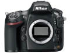
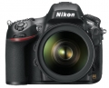
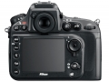
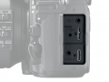
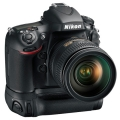
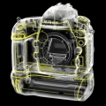
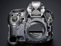

器材库 > 35mm画幅可换镜头数码相机 > D800 / D800E

规格总览
产品类型
35mm画幅可换镜头数码相机
发布日期
2012-02-07
厂家推荐价格
3,000.00 （美元）
影像规格
影像传感器
CMOS
影像传感器尺寸
35.9×24.0mm
总像素
3677万
有效像素
3630万
影像处理器
EXPEED 3
最大解像度
7360×4912
静态图像尺寸
[FX] 7360×4912(L) 5520×3680(M) 3680×2456(S) [1.2×] 6144×4080(L) 4608×3056(M) 3072×2040(S) [DX] 4800×3200(L) 3600×2400(M) 2400×1600(S) [5:4] 6144×4912(L) 4608×3680(M) 3072×2456(S)
静态图像格式
JPEG, TIFF-RGB, NEF(RAW), NEF(RAW)+JPEG
静态图像质量
NEF （RAW）：12 位或14 位无损压缩、压缩或未压缩；JPEG：兼容JPEG-Baseline，压缩比（约）为精细（1 : 4）、标准（1 : 8）或基本（1 : 16）（文件大小优先）
画幅比
3:2, 16:9, 5:4
短片尺寸
1920×1080@30/25/24fps, 1280×720@60/50/30/25fps
短片格式
MOV, MPEG4-AVC/H.264
除尘系统
清洁图像传感器、图像除尘参考数据（需要另购的Capture NX 2软件）
镜头和对焦
镜头卡口
Nikon F
兼容镜头
兼容AF 尼克尔镜头，包括G 型和D 型镜头（PC 微距尼克尔镜头受到某些限制）、DX 镜头（使用DX24 × 16 1.5 ×图像区域）、AI-P 尼克尔镜头以及非CPU AI 镜头（仅限于曝光模式A 和M）。
对焦系统类型
Multi-CAM 3500FX
对焦点
51个自动对焦点（包括15个十字型感应器）
对焦模式
自动对焦（AF）：单次伺服AF（AF-S）；连续伺服AF（AF-C）；根据拍摄对象的状态自动启用预测对焦跟踪；手动对焦（M）：可以使用电子测距仪
AF辅助灯
有
手动对焦
支持
曝光控制
测光系统
使用91K (91,000)像素RGB 感应器的TTL 曝光测光
测光模式
中央重点测光, 多分区评价测光, 点测光
测光范围
矩阵或中央重点测光：0-20EV~点测光：2-20EV
曝光模式
P（程序自动曝光）, A（光圈优先自动曝光）, S（快门速度优先自动曝光）, M（手动测光曝光）
快门类型
电子控制，纵走式，焦平面快门
快门速度
1/8000-30 秒（以1/3、1/2 或1 EV 为步长进行微调）、B 门、X250
曝光补偿
±5EV以1/3或1/2或1EV级调整
自动曝光锁
有
自动包围曝光
拍摄2 至9 幅，以1/3、1/2、2/3 或1EV 为步长进行微调
ISO感光度
自动, 以1/3、1/2 或1EV 为步长在ISO 100-6400 之间进行微调, 可扩展至50-25600
白平衡
白炽灯, 闪光灯, 色温调节, 阴天, 荧光灯, 阴影, 自动, 预设白平衡, 晴天
自拍
10秒, 2秒, 5秒, 20秒, 以0.5、1、2 或3 秒为间隔曝光1~9 次
连拍
14位NEF实现每秒4张高速连拍，使用电池手柄MB-D12时达到每秒6张
闪光灯
内置闪光灯
弹出式
闪光模式
TTL
闪光指数
12
闪光补偿
-3 至 +1EV以1/3、1/2或1EV级调整
闪光同步模式
前帘同步, 后帘同步, 慢速同步, 防红眼同步, 防红眼慢速同步
外接闪光灯
SB-910、SB-900、SB-800、SB-700、SB-600 或SB-400
取景器/显示屏
取景器
眼平五棱取景器
取景范围
100%
取景放大倍率
0.7倍
屈光度调节范围
-3至+1 m-1
景深预视
有
LCD类型
彩色TFT LCD
LCD尺寸
3.2英寸
LCD像素
92.1万
视野率
100%
Live View
有
Live View 对焦模式
自动对焦（AF）：单次伺服AF（AF-S）；全时伺服AF（AF-F）；手动对焦（M）
文件输入/输出
存储卡
CF, SD/SDHC, SDXC
数据接口
USB3.0
视频/音频接口
HDMI Mini 输出
电源
电池
一块EN-EL15 锂离子可充电电池；另购的MB-D12 多功能电池匣可容纳一块尼康EN-EL15 锂离子可充电电池或8节AA碱性电池、镍氢电池或锂电池
外接电源
EH-5b电源适配器；需要EP-5B照相机电源连接器（另购）
机身规格
颜色
黑色
尺寸
146×123×81.5mm
重量
900g
其它
配件端口
热靴, 脚架螺丝孔
支持语言
中文（简体）, 中文（繁体）, 英语, 日语, 捷克语, 丹麦语, 荷兰语, 芬兰语, 法语, 德语, 印度尼西亚语, 意大利语, 韩语, 挪威语, 波兰语, 葡萄牙语, 俄语, 西班牙语, 瑞典语, 土耳其语, 泰语, 阿拉伯语, 乌克兰语, 罗马尼亚语
工作温度
0-40℃
工作湿度
低于85%
附件
带端子盖的EN-EL15锂离子充电电池、MH-25充电器（仅有需要的国家或地区供应家用直流电适配器）、相机带（D800，AN-DC6；D800E，AN-DC6E）、USB线UC-E14、USB线夹、机身盖BF-1B、热靴盖BS-1、显示屏盖BM-12、ViewNX 2安装光盘
wingszero2014-08-08 15:14
tkartist2014-07-29 10:094.69 分
操作性 4.50功能性 5.00美观性 5.00趣味性 4.50耐用性 4.50性价比 4.00解像力 5.00色彩还原 5.00
qxbus2014-06-06 13:044.81 分
操作性 4.50功能性 5.00美观性 5.00趣味性 5.00耐用性 4.50性价比 4.50解像力 5.00色彩还原 5.00
dwltimothy2014-06-05 13:474.63 分
操作性 4.50功能性 4.50美观性 5.00趣味性 4.50耐用性 4.50性价比 4.50解像力 5.00色彩还原 4.50
笨笨的平凡世界2014-06-04 16:594.5 分
操作性 5.00功能性 5.00美观性 4.00趣味性 4.00耐用性 4.50性价比 5.00解像力 4.50色彩还原 4.00
高产奶牛2014-05-22 11:584.94 分
操作性 5.00功能性 5.00美观性 5.00趣味性 4.50耐用性 5.00性价比 5.00解像力 5.00色彩还原 5.00
李昂2014-05-20 10:25
罗亚2014-05-17 19:57
mop562014-05-15 15:454.94 分
操作性 5.00功能性 5.00美观性 5.00趣味性 5.00耐用性 5.00性价比 4.50解像力 5.00色彩还原 5.00
年画2014-05-09 20:504.81 分
操作性 5.00功能性 5.00美观性 5.00趣味性 4.00耐用性 5.00性价比 4.50解像力 5.00色彩还原 5.00
石头书生2014-04-26 15:205 分
操作性 5.00功能性 5.00美观性 5.00趣味性 5.00耐用性 5.00性价比 5.00解像力 5.00色彩还原 5.00
nuser2014-03-06 12:084.25 分
操作性 4.50功能性 4.50美观性 3.00趣味性 4.50耐用性 4.50性价比 4.00解像力 4.50色彩还原 4.50
高产奶牛2014-02-26 22:07
gedon2014-02-26 15:344.69 分
操作性 5.00功能性 4.00美观性 4.00趣味性 5.00耐用性 4.50性价比 5.00解像力 5.00色彩还原 5.00
南山金牛2014-02-25 16:59
北方郎2014-02-24 12:074.5 分
操作性 4.50功能性 4.50美观性 5.00趣味性 4.50耐用性 4.50性价比 4.50解像力 5.00色彩还原 3.50
野外飞虎2014-02-22 20:564.56 分
操作性 5.00功能性 4.50美观性 4.00趣味性 4.00耐用性 5.00性价比 4.00解像力 5.00色彩还原 5.00
percy3602014-02-17 10:304.69 分
操作性 5.00功能性 5.00美观性 4.50趣味性 5.00耐用性 5.00性价比 4.00解像力 5.00色彩还原 4.00
木头瓜子2014-02-02 15:23
jgun2532014-01-28 15:364.75 分
操作性 5.00功能性 5.00美观性 4.50趣味性 5.00耐用性 4.50性价比 5.00解像力 5.00色彩还原 4.00
普洱茶2013-12-27 13:174.5 分
操作性 5.00功能性 5.00美观性 4.50趣味性 5.00耐用性 5.00性价比 2.00解像力 5.00色彩还原 4.50
倾听远方2013-12-22 01:194.75 分
操作性 4.50功能性 5.00美观性 4.50趣味性 5.00耐用性 4.50性价比 4.50解像力 5.00色彩还原 5.00
老怪2013-12-13 08:474.31 分
操作性 5.00功能性 5.00美观性 4.00趣味性 5.00耐用性 3.00性价比 3.00解像力 5.00色彩还原 4.50
fuyy2013-11-18 10:174.56 分
操作性 5.00功能性 5.00美观性 4.00趣味性 4.50耐用性 4.50性价比 4.50解像力 4.00色彩还原 5.00
zengmp32013-11-11 11:333.94 分
操作性 4.50功能性 4.50美观性 4.00趣味性 3.50耐用性 3.00性价比 3.50解像力 4.50色彩还原 4.00
丛林色兔2013-11-05 21:194.38 分
操作性 4.50功能性 4.50美观性 4.50趣味性 4.50耐用性 4.00性价比 4.00解像力 4.50色彩还原 4.50
七彩霞光2013-10-21 16:025 分
操作性 5.00功能性 5.00美观性 5.00趣味性 5.00耐用性 5.00性价比 5.00解像力 5.00色彩还原 5.00
yisongcheng2013-10-16 19:124.5 分
操作性 4.50功能性 4.50美观性 4.00趣味性 4.50耐用性 4.50性价比 4.50解像力 5.00色彩还原 4.50
大个子老王2013-09-22 14:594.56 分
操作性 4.00功能性 5.00美观性 4.00趣味性 4.00耐用性 4.50性价比 5.00解像力 5.00色彩还原 5.00
hjld2013-08-25 02:274.75 分
操作性 5.00功能性 5.00美观性 4.50趣味性 5.00耐用性 4.00性价比 4.50解像力 5.00色彩还原 5.00
法兰克福2013-08-20 10:434.81 分
操作性 5.00功能性 5.00美观性 4.50趣味性 5.00耐用性 5.00性价比 4.00解像力 5.00色彩还原 5.00
gdgdccss2013-07-17 15:544.75 分
操作性 4.50功能性 5.00美观性 4.50趣味性 5.00耐用性 5.00性价比 4.00解像力 5.00色彩还原 5.00
w2追影2013-07-17 15:224.69 分
操作性 4.50功能性 5.00美观性 4.50趣味性 4.50耐用性 5.00性价比 4.00解像力 5.00色彩还原 5.00
Pantrol2013-07-15 00:024.81 分
操作性 5.00功能性 5.00美观性 5.00趣味性 4.50耐用性 4.50性价比 4.50解像力 5.00色彩还原 5.00
至尊玉2013-07-11 17:204.88 分
操作性 5.00功能性 5.00美观性 5.00趣味性 4.50耐用性 5.00性价比 4.50解像力 5.00色彩还原 5.00
亚东大鼠2013-07-03 13:364.63 分
操作性 4.50功能性 4.50美观性 4.50趣味性 4.50耐用性 5.00性价比 4.00解像力 5.00色彩还原 5.00
闻墨2013-06-24 14:034.56 分
操作性 5.00功能性 4.50美观性 4.50趣味性 4.50耐用性 4.50性价比 4.50解像力 4.50色彩还原 4.50
zhouxf2232012-02-13 18:194.56 分
操作性 5.00功能性 5.00美观性 4.50趣味性 4.00耐用性 4.00性价比 5.00解像力 4.00色彩还原 5.00
红色侧卫2012-02-11 22:464.69 分
操作性 5.00功能性 5.00美观性 4.50趣味性 4.50耐用性 5.00性价比 4.00解像力 5.00色彩还原 4.50
zhpglh2012-02-11 10:483.06 分
操作性 4.50功能性 4.50美观性 3.00趣味性 3.00耐用性 3.00性价比 3.00解像力 1.50色彩还原 2.00
Z号巡洋舰2012-02-11 09:304.31 分
操作性 5.00功能性 3.00美观性 4.00趣味性 4.00耐用性 5.00性价比 4.50解像力 4.50色彩还原 4.50
Z号巡洋舰2012-02-11 09:09
摄摄猫2012-02-11 06:404.75 分
操作性 4.50功能性 5.00美观性 4.00趣味性 4.50耐用性 5.00性价比 5.00解像力 5.00色彩还原 5.00
竹园风采2012-02-10 13:414.69 分
操作性 4.50功能性 5.00美观性 4.50趣味性 5.00耐用性 5.00性价比 4.50解像力 4.50色彩还原 4.50
若农2012-02-09 19:164.44 分
操作性 4.50功能性 5.00美观性 3.00趣味性 5.00耐用性 5.00性价比 3.50解像力 5.00色彩还原 4.50
simonj08242012-02-09 13:224.88 分
操作性 5.00功能性 5.00美观性 4.00趣味性 5.00耐用性 5.00性价比 5.00解像力 5.00色彩还原 5.00
Heero2012-02-09 10:124.44 分
操作性 5.00功能性 5.00美观性 0.50趣味性 5.00耐用性 5.00性价比 5.00解像力 5.00色彩还原 5.00
产品图 / 样片
D800/D800E

D800/D800E

D800/D800E

D800/D800E

D800/D800E

D800/D800E

D800/D800E
评测 / 相关文章
- 详细内容 （存档）
- 定位大变 尼康D800单反相机详细评测 （存档）
- 追求终极锐度 尼康D800E试用体验 （存档）
- 低通之变 尼康D800与D800E对比测试 （存档）
- ［试用］器材党的广角视界 （存档）
- ［资讯］尼康D800/D800E固件更新1.10版 （存档）
- ［试用］重拾标准 怀念经典 （存档）
- ［试用］MICRO 105/2.8G VR眼里的微观大世界 （存档）
- ［资讯］D800(E)遥控端子插座松动歪斜的修理方法 （存档）
- ［试用］五年以后才明白，Pentax就是好玩儿 （存档）
- ［试用］关公战秦琼 D800与富士XM1之另类对比 （存档）
- ［试用］借助高像素DIY数字微观自动拍摄平台 （存档）
- ［试用］DIY“数字化微观自动拍摄平台” （存档）
相关文章
- ［试用］器材党的广角视界 （存档）
- ［资讯］尼康D800/D800E固件更新1.10版 （存档）
- ［试用］重拾标准 怀念经典 （存档）
- ［试用］MICRO 105/2.8G VR眼里的微观大世界 （存档）
- ［资讯］D800(E)遥控端子插座松动歪斜的修理方法 （存档）
- ［试用］五年以后才明白，Pentax就是好玩儿 （存档）
- ［试用］关公战秦琼 D800与富士XM1之另类对比 （存档）
- ［试用］借助高像素DIY数字微观自动拍摄平台 （存档）
- ［试用］DIY“数字化微观自动拍摄平台” （存档）
- ［试用］低通之变 尼康D800与D800E对比测试 （存档）
- ［资讯］尼康因过热召回而EN-EL15电池的售后信息 （原站已下线）
- ［资讯］牛人拆机 尼康D800“Err”故障检修记 （原站已下线）
- ［资讯］谁是长曝王 各家机型高ISO长曝控躁PK （存档）
- ［资讯］艺高人胆大 拆修尼康D800更换反光板 （原站已下线）
- ［试用］潘潘的尼康人像世界 （原站已下线）
- ［行情］秒杀一切不服 尼康D800最新低价！ （原站已下线）